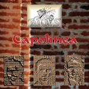

| Artist: | Aton's |
| Title: | Capolinea |
| Label: | Musea FGBG 4448.AR |
| Length(s): | 42 minutes |
| Year(s) of release: | 2002 |
| Month of review: | [10/2002] |
| 1) | Introduzione/Star | 7.14 |
| 2) | La Fanciulla E L'Albero | 6.05 |
| 3) | Oltre Me | 4.40 |
| 4) | All'Ingresso 1.38 | |
| 5) | Il Fratello | 5.05 |
| 6) | Capolinea | 6.22 |
| 7) | Come Me | 4.05 |
| 8) | Sonata | 2.22 |
| 9) | Sempre Solo | 4.45 |
La Fanciulla E L'Albero is different altogether: easy going acoustic guitar, somewhat spaceous. The melodies are quite good, notwithstanding their easy-goingness. The vocals are in Italian, and less panicky than on the previous track. This does not mean to say that the vocalist has become emotionless. I get the impression this is impossible for an Italian. Later on the electric guitar also sets in at times, making the song a bit noisier again.
Time for a funky intro on Oltre Me with the bass and acoustic guitar leading the way. The drumming is off-beat, but notwithstanding the music comes over as being rather ordinary. The middle part is a bit more melodic, but at the end the funkiness/bounciness comes back in and it is time for a meandering jazz rock guitar solo with an aggressive finale on vocals and keyboards. That part is quite good, but the production lacks a bit of transparency to make it come out really well.
On the short All'Ingresso, the church organ returns with some good themes. Il Fratello has a nice slow groove with some distinctive keyboard parts accompanying the somewhat low melodic vocals. Plenty of ingredients rear their head along the way: nylon string guitar, various styles of keyboards, and so on. It is hard to name definite references here: the style is typical for Italian progressive I would think, but with a bit more funk/groove, because the bass and the drums play quite audible roles. This is one of the better tracks so far it seems to me.
The title track is a rtaher easy-going percussive piece of work, quite light and dancing. The harmonies in this song reveal that timing is not a strong point, making the music again very unrestful, while it seems to me that this not meant this way.
Come Me is a melodic song, with repetitive piano runs. The vocals come over a bit dull, probably a recording thing. Sonata is a short instrumental opening with acoustic guitar, later accompanied by bass and accidental drum sounds. The drums sound as if they were recorded in a large empty room, very flat.
Sempre Solo is again a vocal track, typically Italian and with some very distinctive vocal melodies. Maybe, the music gets a bit close to Italian pop from the seventies, but the music is good. In the middle a noisy guitar sets in to add some speed to the affair. Then the vocals return. A pleasant track.